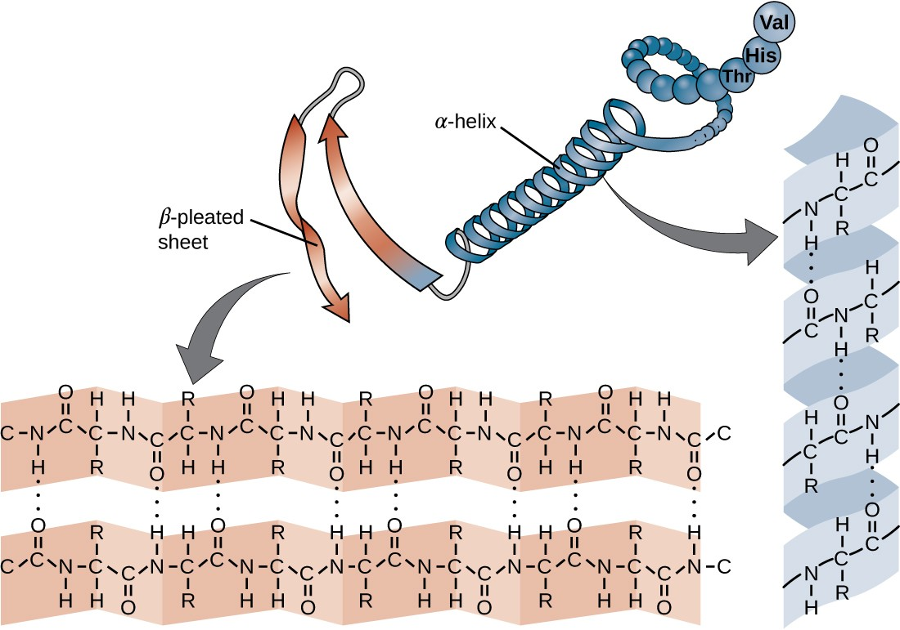
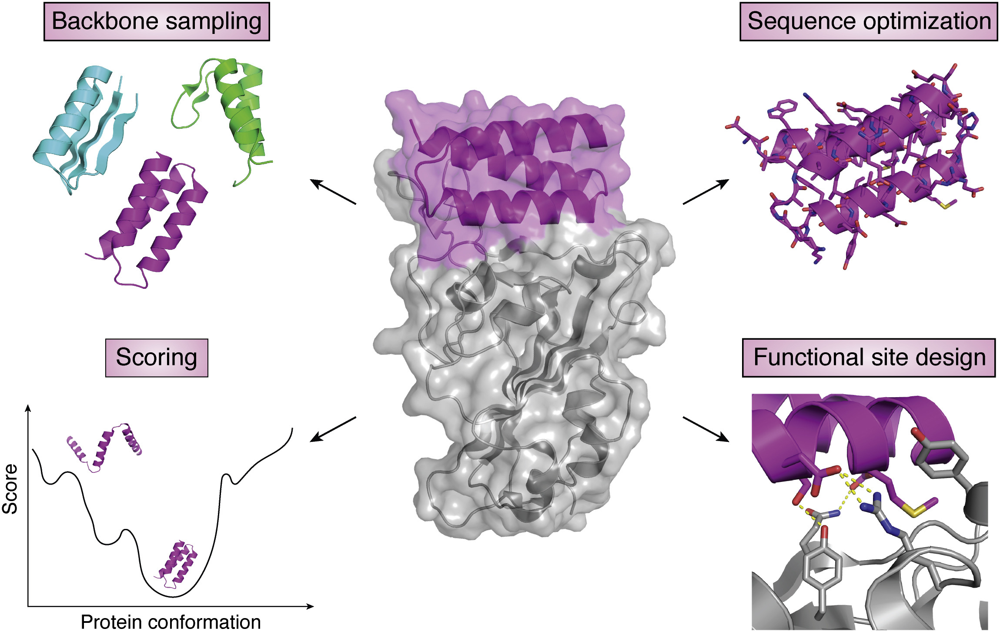

Protein Design
Amino Acid
Primary Structure
Secondary Structure

Protein Design
A technique by which proteins with enhanced or novel functional properties are created.
Principles

```python print('hello') ```